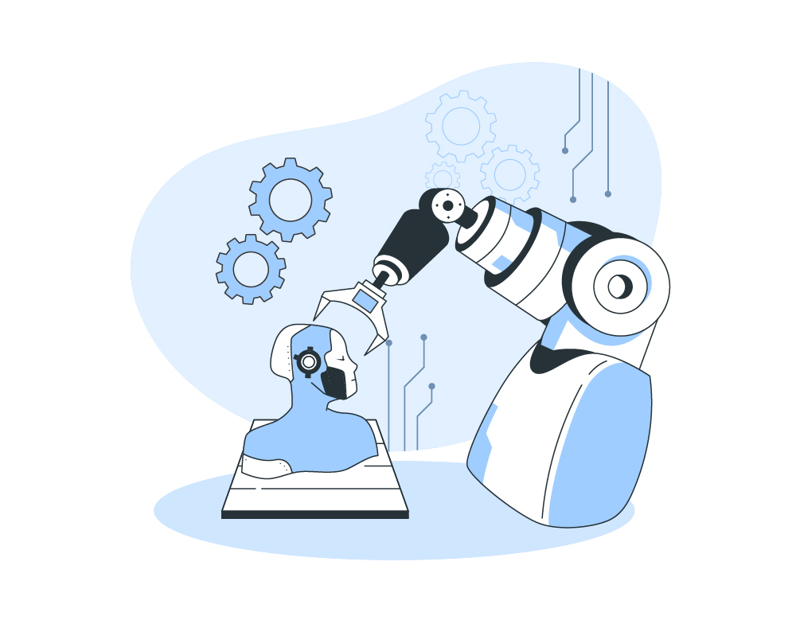

Componentes de Robótica Utilizados en la Misma Materia
Los componentes clave en robótica educativa son los sensores (que captan información del entorno), los actuadores (que permiten el movimiento) y las unidades de procesamiento (que controlan las funciones del robot). Estos elementos enseñan conceptos de programación, electrónica y mecánica.

Sensores
Definición: Dispositivos que capturan información del entorno (temperatura, presión, movimiento, etc.).
Ejemplo: Sensores infrarrojos para medir la distancia en robots educativos.
Actuadores
Definición: Componentes que convierten energía en movimiento físico.
Ejemplo: Servomotores que permiten a los robots mover brazos o ruedas.
Aplicación Educativa: Se enseñan principios de física y mecánica a través de la construcción de robots.

Unidades de Procesamiento
Ejemplo: Uso de placas como Arduino o Raspberry Pi en proyectos educativos.
Aplicación Educativa: Introducción a la programación y el desarrollo de algoritmos básicos.
La robótica educativa fomenta habilidades prácticas y críticas en los estudiantes, integrando tecnología con el aprendizaje. Sus componentes son herramientas fundamentales para comprender y aplicar conocimientos en un contexto real y dinámico.